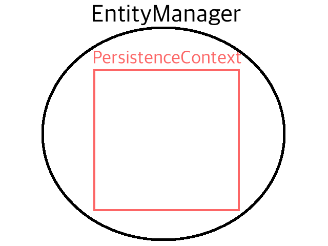
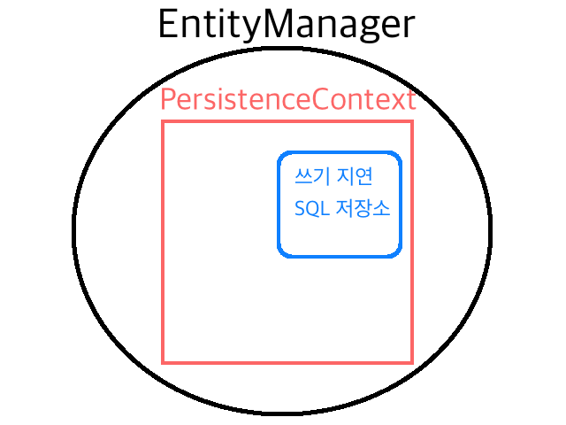

이미지 출처: <박상문의 Photo & Essay>평양 육아원의 모습
Entity
DB의 테이블과 매칭이 되는 개념이라고 보면 된다.
그렇다면 왜 이름이 Table이 아니라 Entity일까…?
만약 DB에 member라는 테이블이 있고, 해당 테이블의 스키마가 아래와 같다고 해보자.1
2
3
4
5
6CREATE TABLE `Member` (
`id` BIGINT(20) unsigned NOT NULL AUTO_INCREMENT,
`name` varchar(255) NOT NULL,
`age` int(11) NOT NULL,
PRIMARY KEY (`id`)
)
그렇다면 엔티티는 아래와 같이 만들 수 있다.1
2
3
4
5
6
7
8
9
10
11
12
13
14
15
16
17
18
19
20
21
22
23
24
25
26
27
28
29
30
31
32
33
34
35
36
37
public class Member {
(strategy = GenerationType.AUTO)
(nullable = false)
private long id;
(nullable = false)
private String name;
(nullable = false)
private int age;
public long getId() {
return id;
}
public void setId(long id) {
this.id = id;
}
public String getName() {
return name;
}
public void setName(String name) {
this.name = name;
}
public int getAge() {
return age;
}
public void setAge(int age) {
this.age = age;
}
}
기본적으로 JPA는 모든 필드를 불러오게 끔 구현돼있다.
하지만 모든 케이스에서 id, name, age 필드를 다 다루지 않는다.
어떤 경우에는 id, name 필드만 다루는 경우도 있을 수 있다.
그런 경우에 대비해서 다음과 같이 엔티티 클래스를 하나 더 만들 수 있다.
1 |
|
따라서 테이블은 한 개지만, 엔티티는 경우에 따라서 여러 개를 만들 수 있다.
혹은 JPA를 좀 더 잘 다룬다면 하나의 엔티티로도 충분히 커버를 할 수 있기도 하다.
EntityManager
위에 언급한 엔티티를 관리하는 역할을 수행하는 클래스이다.
그럼 어떤 방식으로 엔티티 매니저는 엔티티들을 관리할까?
엔티티 매니저 내부에 영속성 컨텍스트(Persistence Context)라는 걸 두어서 엔티티들을 관리한다.
영속성 컨텍스트(Persistence Context)

영속성: 기본적으로 컴퓨터 공학에서 영속성이라고 하면 비휘발성이라고 보면 될 것 같다.
휘발성은 프로그램이 꺼지거나 전원이 나가면 데이터가 날아가는 경우를 휘발성이라 하고, 그 반대가 비휘발성이다.
하지만 휘발성과 비휘발성 이란 단어는 저장 장치(메인 메모리나 플래시 메모리 등등)의 특징을 나타낼 때 많이 쓰고,
영속성이란 단어는 DB에 관해 설명할 때 많이 사용하는 것 같다.
컨텍스트: 직역하면 맥락, 문맥이란 뜻인데 프로그래밍 쪽에선 좀 다른 뜻으로 쓰이는 것 같다.
내가 알기로는 하나의 환경, 공간? 쯤으로 이해하고 사용하고 있다.
영속성 컨텍스트는 엔티티를 영구히 저장하는 환경이다.
출처: 자바 ORM 표준 JPA 프로그래밍(김영한 저) 92P, 3.2 영속성 컨텍스트란?
하지만 개발자가 직접 영속성 컨텍스트를 뜯어보거나 그 내부를 들여다 볼 수는 없어서 약간은 논리적이거나 추상적인 개념으로 바라봐야한다.
여러 엔티티 매니저가 하나의 영속성 컨텍스트를 공유할 수도 있다고 한다.
그리고 영속성 컨텍스트를 책의 저자는 엔티티를 영구히 저장하는 환경이라고 했는데 내가 봤을 때는
영속성 컨텍스트를 관리하는 모든 엔티티 매니저가 초기화 및 종료되지 않는 한 엔티티를 영구히 저장하는 환경이라고 정정해야할 것 같다.
그냥 영구히 저장 된다고 하면 프로그램을 껐다 켜도 영속성 컨텍스트는 항상 살아 있을 것 같다는 생각이 든다.
하지만 프로그램을 끄기도 전에 엔티티 매니저를 초기화 및 종료 시키는 코드를 만나면 해당 영속성 컨텍스트는 소멸된다.
엔티티 매니저와 영속성 컨텍스트의 엔티티 관리
그럼 엔티티 매니저와 영속성 컨텍스트는 어떻게 엔티티를 관리할까?
우선 한 명의 멤버를 추가하는 코드를 살펴보자.
1 | public class Join { |
여기서 두 가지 설명하지 않은 개념이 있다.
엔티티가 영속성을 가졌을 때의 특징(엔티티의 생명주기)와 트랜잭션이다.
엔티티의 생명 주기는 나중에 엔티티 매니저를 사용하는 이유와 관련해서 따로 정리해야겠다.
트랜잭션(Transaction)
하나의 작업 단위라고 보면 될 것 같다.
예를 들면 상품 구매라는 하나의 작업을 보면 아래와 같은 자잘한 작업들이 존재한다.
- 상품의 재고 조회
- 유저의 잔고 조회
- 상품의 재고 -1
- 유저의 잔고에서 돈을 뺌.
- 주문 생성
이런 5개의 작업은 중간에 하나라도 뻑나면 작업 전체가 뻑났다고 보고 아예 맨 처음 상태로 돌려야한다.
4번에서 뻑났을 때 상품의 재고도 -1 했던 걸 원래 처음 상태로 돌려놔야 정상적인 작동이라고 말할 수 있다.
이렇게 오류가 났을 때 처음 상태로 돌아가는(rollback) 작업의 단위를 트랜잭션이라고 한다.
트랜잭션이 모두 정상적으로 수행됐을 때는 commit을 수행해서 작업 내용을 실제 DB와 엔티티 매니저에 반영한다.
그럼 JPA에서 모든 로직은 왜 트랜잭션 안에서 수행해야하는 것일까…?
물론 조회 로직은 트랜잭션 안에서 수행해야 할 필요도 없고, 트랜잭션의 단위가 커지면 데드락 이슈에 봉착하기 때문에 최대한 트랜잭션의 단위를 작게 잡으면서 안정성을 가져가는 게 베스트다.
그건 JPA가 쿼리를 한 방에 날리기 때문이다.
쓰기 지연 SQL 저장소

영속성 컨텍스트 안에는 쓰기 지연 SQL 저장소라는 공간이 따로 존재한다.
만약 아래와 같은 코드가 있다고 보자.
1 | public class Join { |
트랜잭션을 생각하지 않고 의식의 흐름대로 코드의 동작을 추측해보면…
- 쿼리가 두 번 날아갈 것이다.
- 만약에 멤버 2를 저장하는 시점에서 롤백을 해야할 때는 날리지 않아도 될 멤버 1에 대한 삽입 쿼리를 날리게 된 격이다.
하지만 쓰기 지연 SQL 저장소 및 트랜잭션에 의해 아래와 같이 동작한다.
- 트랜잭션이 커밋 되기 직전까지 모든 쿼리문은 영속성 컨텍스트 내부의 쓰기 지연 SQL 저장소에 저장된다.
- 트랜잭션이 커밋되는 순간 모든 쿼리가 한 방에 날아간다.
- 만약 트랜잭션 내부에서 오류가 나서 롤백을 해야한다면 애초에 날리지도 않을 쿼리를 날리지도 않는다.
위와 같이 성능 이슈 때문에 모든 로직을 트랜잭션 내부에서 처리하게끔 하려는 것인 것 같다.
EntityManagerFactory
엔티티 매니저는 여러 스레드가 동시에 접근하면 동시성 문제가 발생하므로 스레드 간에 절대 공유하면 안 된다.
동시성(Concurrency): 유저가 체감하기에는 동시에 수행하는 거 처럼 보이지만 사실은 유저가 체감할 수 없는 짧은 시간단위로 작업들을 번갈아가면서 수행하는 것이다.
예를 들면 싱글 코어에서 멀티 스레드를 구현하기 위해서 쓰이는 기법?이다.
각 스레드들이 동시에 동작하는 거 같지만 알고 보면 스레드들이 아주 짧은 시간마다 번갈아가면서 작업을 수행하고 있는 것이다.
병렬(Parallelism): 우리가 생각하는 그 진짜 동시에 실행하는 개념을 생각하면 될 것 같다.
실제로 동시에 여러 작업이 수행되는 개념이다.
멀티 코어에서 멀티 스레드를 구현할 때 쓰이는 기법?이다.
각 스레드들이 동시에 동작한다.
내가 과자 먹으려고 하는데 누가 와서 뺏어먹을 수도 있기 때문에…
내가 데이터를 수정하고 있는데 다른 스레드에서 해당 데이터를 미리 수정해버리면 안 되기 때문…
따라서 엔티티 매니저는 하나를 공유하면 안 되고, 상황에 따라서 계속해서 만들어줘야한다.
그럼 이런 엔티티 매니저는 누가 만들어줄까?
바로 엔티티 매니저 팩토리(공장)이다.
1 | public class Join { |
공장(엔티티 매니저 팩토리)에서 제품(엔티티 매니저)를 찍어내는 개념이라고 보면 될 것 같다.
엔티티 매니저 팩토리는 엔티티 매니저와 달리 여러 스레드가 동시에 접근해도 안전하다.
단순히 엔티티 매니저만 찍어대는 녀석이기 때문이다.
비용도 보면 공장을 짓는 비용은 굉장히 크다.
그래서 엔티티 매니저 팩토리는 DB 당 하나 밖에 사용하지 않는다.
그에 비해 공장에서 제품을 찍어내는 것은 너무나도 당연하고 빈번하게 일어나는 일이기 때문에 비용이 엄청 크게 들지 않는다.
1 | public class EMF { |
하지만 그냥 일반적으로 엔티티 매니저 팩토리를 사용하면 계속 새로운 엔티티 매니저 팩토리를 생성한다.
따라서 동일한 엔티티 매니저 팩토리를 공유해서 사용하려면 싱글턴 인스턴스나 의존성 주입 등등을 통해 개발자의 의식적인 노력이 필요하다.